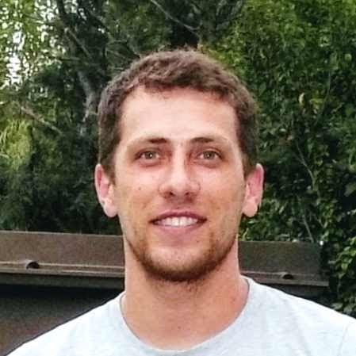

Hola mi nombre es Gaston Garanton!
🔍 Estudiante de Tecnicatura Universitaria en Programación - UTN
Analista de Datos - UBA
💻 Desarrollador Python
Experiencia avanzada en bibliotecas como:
- Pandas: Análisis de datos
- Matplotlib y Seaborn: Visualización de datos
- NumPy: Manipulación de arreglos
- Tkinter: Desarrollo de interfaces gráficas
- Flask: Desarrollo web
🗄️ Bases de Datos SQL
Diseño y gestión eficiente. sqlserver, Mysql, MariaDB
🛠️ Técnico en Computación
Especializado en el armado y reparación de computadoras.
🌐 Conocimientos en Administración de Redes
Habilidades en configuración y mantenimiento.
🌐 Conocimientos Adicionales
- HTML: Estructuración de contenido web
- CSS: Estilos y diseño de páginas web
- JavaScript: Programación del lado del cliente
🚀 Aprendizaje Continuo
Comprometido con el aprendizaje continuo, busco oportunidades para aplicar y expandir mis habilidades en entornos profesionales desafiantes. Estoy entusiasmado por contribuir y crecer en el ámbito tecnológico.